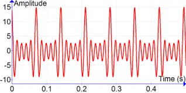

Актуальність теми
Працюючі механізми — двигуни, редуктори, коробки передач — породжують віброакустичні сигнали, аналіз яких дозволяє оцінювати поточний технічний стан об’єкта без використання спеціалізованих датчиків. Своєчасна діагностика дозволяє запобігати аваріям та зменшувати витрати на обслуговування.
Мета та завдання дослідження
Мета
Розробити алгоритм та комп’ютерну програму для оперативного оцінювання поточного стану динамічних об’єктів за спектральними характеристиками контрольованих сигналів.
Основні завдання
- Проаналізувати методи спектральної діагностики
- Реалізувати розкладання сигналу в ряд Фур’є
- Обчислити інтегральні інформаційні оцінки спектру
- Дослідити чутливість оцінок до зміни параметрів об’єкта
- Перевірити алгоритм на моделі об’єкта 2-го порядку
Методологія дослідження
Контрольований сигнал представляється у вигляді суми гармонійних складових та аналізується у частотній області шляхом застосування швидкого перетворення Фур’є (БПФ). Для оцінювання стану об’єкта використовуються інтегральні інформаційні характеристики спектру.
Очікувані результати
В результаті роботи буде отримано програмну систему, що дозволяє виявляти відхилення поточного стану динамічних об’єктів від нормального за зміною інтегральних спектральних оцінок.
Ключові слова
технічна діагностика, динамічні об’єкти, вібрації, спектральний аналіз, інтегральна оцінка, БПФ
Контактна інформація
Студент: Вініченко Дмитро
Група: ІНз-21с
Email: відправити лист
Повний текст роботи: PDF